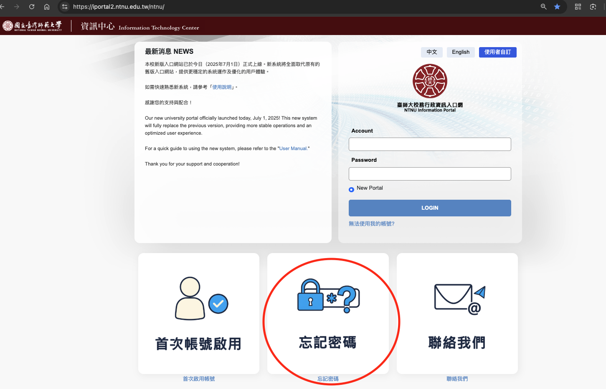
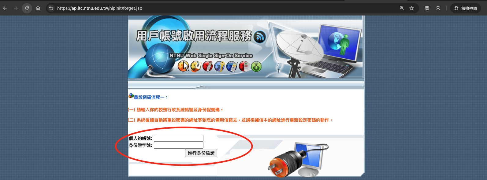
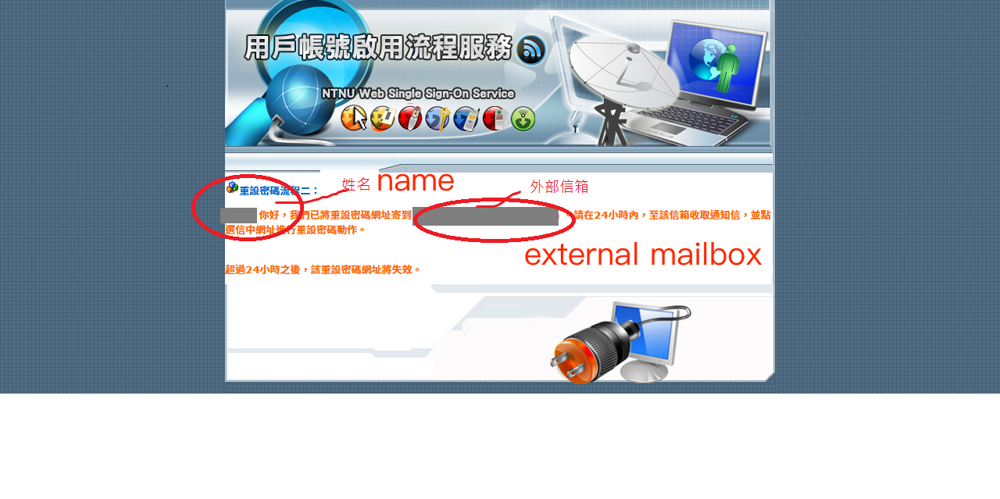
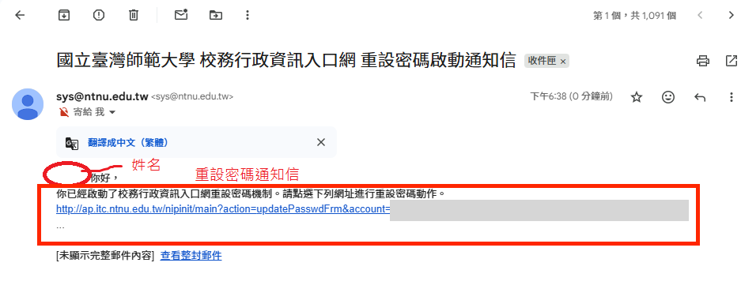
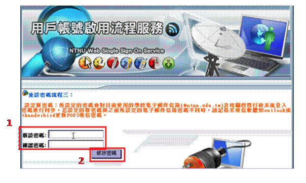
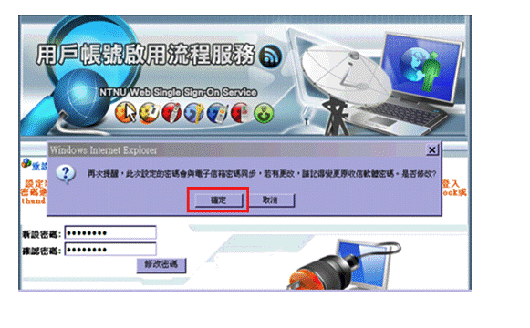
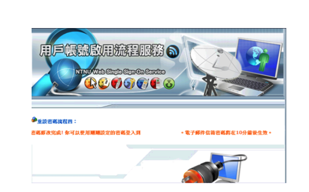

重設密碼 Reset password
點選「忘記密碼」
Click the "Forgot Password" button
在入口網登入頁面點選「忘記密碼」按鈕，會到重設密碼頁面。
Click the "Forgot Password" button to go to the password reset page.

輸入帳號與身分證字號
Enter your account (or student ID) and ID card number.
- 注意英文大小寫。
- 帳號(教職員)或學號(學生)，不需加 @ntnu.edu.tw。
- 本國人輸入身分證字號10碼；外國人看報到留的是居留證或護照。
Note the capitalization. Enter your account number (or student ID). Do not add the suffix @ntnu.edu.tw. Domestic residents use 10-digit ID numbers; foreigners should use their residence permit or passport number as indicated on registration.

到外部信箱收信 修改密碼
Check your external mailbox, open the link, and reset your password.
3-1. 重設密碼信件會寄至外部信箱
重設密碼信件會寄至外部信箱
The password reset email will be sent to your external mailbox.

3-2. 到外部信箱收信，點開信件中的連結，設定新密碼
Open the email and click the reset link.

3-3. 依頁面指示輸入新密碼，完成後按「修改密碼」按鈕。
Enter your new password and click the "Change Password" button.

3-4. 按「確定」確認修改完成
系統跳出確認訊息時，請按「確定」。頁面顯示修改完成後，請等待 10 到 20 分鐘再登入入口網。
Click "OK" when the confirmation message appears. After the completion message appears, wait 10 to 20 minutes before logging in to the portal.
師大入口網 NTNU Iportal
https://iportal2.ntnu.edu.tw/ntnu/

Webmail 密碼同步提醒
若之前已設定過 webmail，密碼同步更新需要時間，請於 30 分鐘到 1 小時後再用新密碼登入 webmail。
If you have previously set up webmail, password synchronization will take time. Please log in with the new password after 30 minutes to 1 hour.